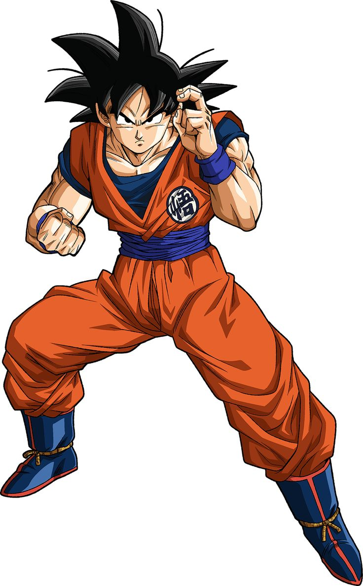
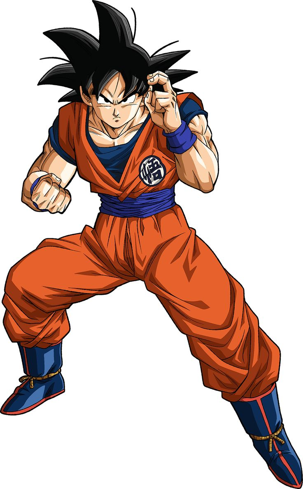

Son Goku (孫そん悟ご空くう, Son Gokū, Sūn Wùkōng), conocido como Gokú en Hispanoamérica, es el protagonista principal del manga y anime de Dragon Ball creado por Akira Toriyama. Su nombre real y de nacimiento es Kakarotto (カカロット, Kakarotto «Kacarrot» en saiyano.png en alfabeto saiyano) y es uno de los pocos saiyanos que lograron sobrevivir a la destrucción total del Planeta Vegeta del Universo 7. Es el segundo hijo de Bardock y Gine, hermano menor de Raditz, nieto adoptivo de Son Gohan, esposo de Chi-Chi, padre de Son Gohan y Son Goten, a su vez también es el abuelo de Pan y ancestro de Son Goku Jr. Originalmente enviado a la Tierra como un infante volador con la misión de conquistarla. Sin embargo, el caer por un barranco le proporcionó un brutal golpe que si bien casi lo mata, este alteró su memoria y anuló todos los instintos violentos de su especie, lo que lo hizo crecer con un corazón puro y bondadoso, pero conservando todos los poderes de su raza. No obstante, en la nueva continuidad de Dragon Ball se establece que él fue enviado por sus padres a la Tierra con el objetivo de sobrevivir a toda costa a la destrucción de su planeta por parte de Freeza. Más tarde, Kakarot, ahora conocido como Son Goku, se convertiría en el príncipe consorte del monte Fry-pan y líder de los Guerreros Z, así como el mayor defensor de la Tierra y del Universo 7, logrando mantenerlos a salvo de la destrucción en innumerables ocasiones, a pesar de no considerarse a sí mismo como un héroe o salvador.